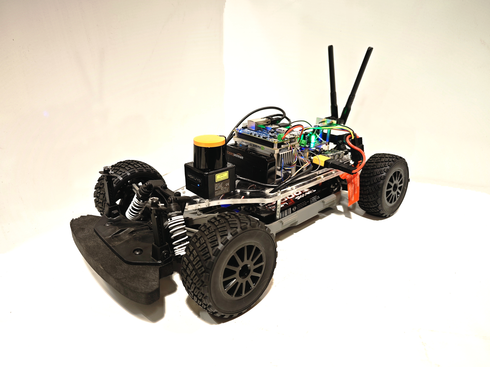
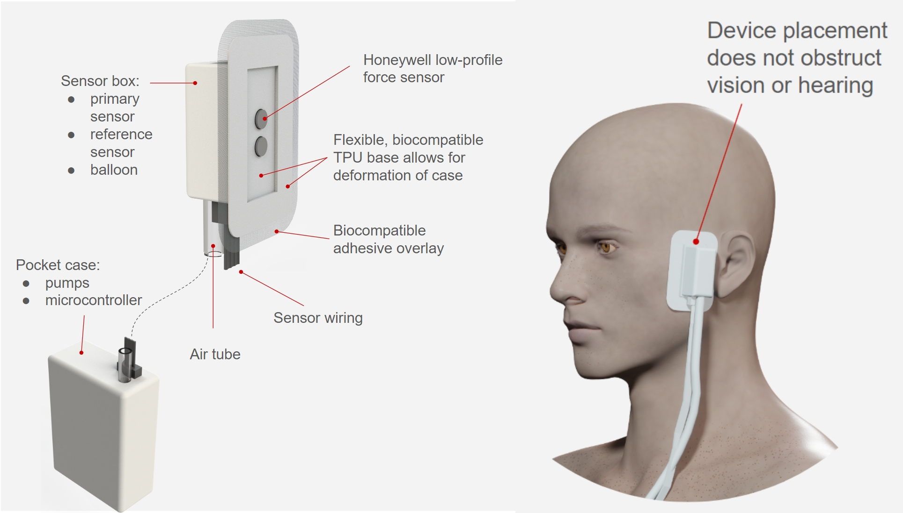

Welcome to my playful corner of Robotics and Mechanics!
Here's a snapshot of my journey, featuring bits and pieces from my past projects.

F1 Tenth
09/2023- Present
- Developing a self-driving 1:10 scale RC car, integrating a Jetson board for code-based control to enable precise maneuvering and remote operation.
- Implementing an adaptive cruise control system using PID control and ultrasonic sensors to ensure safe and efficient navigation in dynamic environments.
- Utilizing LiDAR and the A* algorithm to enable Simultaneous Localization and Mapping (SLAM), enhancing the car's autonomous mapping and navigation capabilities.
- Employing Model Predictive Control (MPC) and Machine Learning techniques to optimize path planning, aiming to achieve improved race performance and strategic decision-making.
- [Github]
- [Video]

Non-Invasive Continuous Blood Pressure Monitoring
08/2022 - 05/2023
- Collaborated on a NASA and NIH-funded research project in partnership with the Neural Systems Group BME Lab at
Massachusetts General Hospital and Harvard Med.
- Developed a medical device to measure ICU patient blood pressure by positioning it around the superficial temporal
artery, controlling extrusion
pressure, and using applanation tonometry pressure sensors.
- Utilized the Arduino platform to control a diaphragm air pump for generating varied pressures and processing data.
Contributed to the project by designing the device's shell, pressure control system, and controller, and providing
support in circuit construction.
Room Exploration and Mapping Robot
10/2022 - 12/2022
- Applied A* path planning algorithm within the ROS framework, visually representing the paths in Rviz.
- Created smooth ROS node communication using ROS services for efficient algorithm coordination.
- Successfully guided a robot through an uncharted maze, recording the explored map, and employed AMCL for accurate localization and navigation within the recorded map.
- Enhanced Turtlebot's capabilities to autonomously reach specified destinations by utilizing C-space calculations, A* path planning, and efficient navigation strategies.
Room Exploration and Mapping Robot
08/2022-10/2022
- Utilized MATLAB to control a 3-degree-of-freedom robotic arm operated in Linux OS for automatically tracking and
classifying objects of different colors.
- Adopted Hephaestus V2 robot arm to support joint control, forward kinematics, inverse kinematics, trajectory planning,
and differential kinematics.
- The robot is designed to undertake warehouse tasks